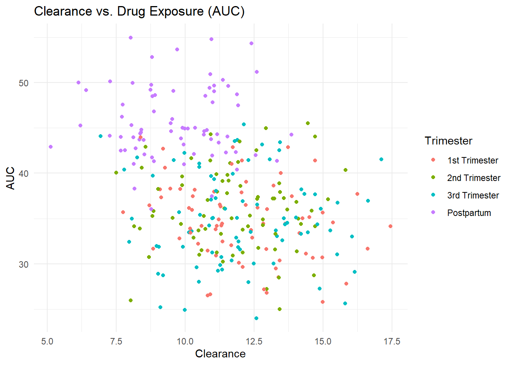
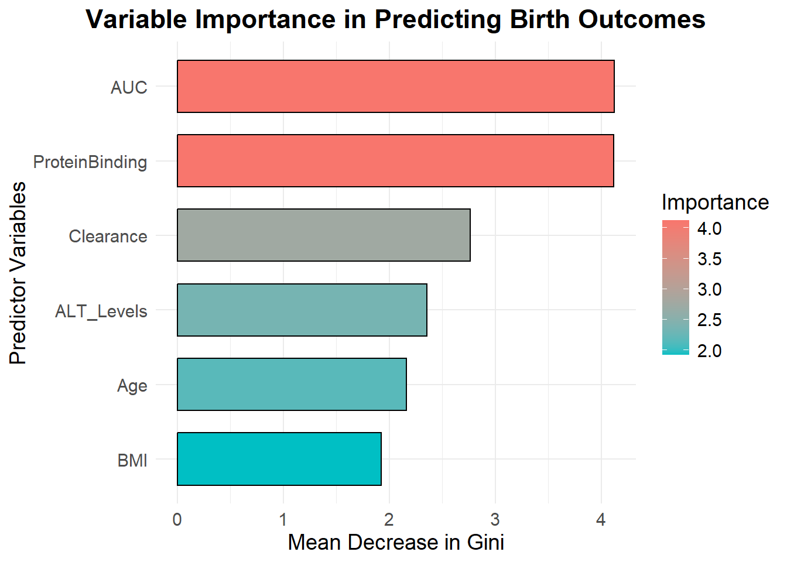

The TBpregnancy dataset is a synthetic dataset designed to study the pharmacokinetic (PK) properties of antiretroviral (ARV) and anti-tuberculosis (TB) drugs in pregnant and postpartum women. The dataset was generated to model real-world drug metabolism patterns and assess how pregnancy impacts drug clearance, exposure (AUC), and birth outcomes. The data simulates clinical trial observations and incorporates known physiological changes during pregnancy that affect drug absorption, distribution, metabolism, and elimination.
Additionally, the dataset examines how pregnancy affects drug metabolism through demographic, pharmacokinetic, and clinical variables. It includes age, BMI, trimester (1st, 2nd, 3rd, postpartum), and drug type (ARV or anti-TB), along with Cmax, AUC, clearance (CL), half-life (T½), and protein binding. Clinical outcomes include CD4 count (for ARV users), viral load, ALT levels, and birth outcomes (normal vs. adverse). Key research questions explore pregnancy’s effect on AUC and clearance, differences in ARV vs. anti-TB metabolism, factors influencing adverse birth outcomes, and inter-individual variability in drug metabolism.
Generating Synthetic Data of pharmacokinetic (PK) data for Antiretroviral (ARV) and Anti-Tuberculosis (TB) drugs during pregnancy and postpartum
# Load required librarieslibrary(ggplot2)
Warning: package 'ggplot2' was built under R version 4.4.3
library(dplyr)
Attaching package: 'dplyr'
The following objects are masked from 'package:stats':
filter, lag
The following objects are masked from 'package:base':
intersect, setdiff, setequal, union
# Set seed for reproducibilityset.seed(123)# Number of participantsn <-300# Generate participant IDsparticipant_id <-1:n # Pregnancy periods (1st, 2nd, 3rd trimester, Postpartum)trimester <-sample(c("1st Trimester", "2nd Trimester", "3rd Trimester", "Postpartum"), size = n, replace =TRUE, prob =c(0.25, 0.25, 0.25, 0.25))# Drug Type (ARV or Anti-TB)drug_type <-sample(c("ARV", "Anti-TB"), size = n, replace =TRUE)# Generate demographic dataage <-sample(18:45, size = n, replace =TRUE) # Age between 18-45 yearsbmi <-ifelse(trimester =="Postpartum", rnorm(n, mean =26, sd =3), rnorm(n, mean =30, sd =3)) # Higher BMI in pregnancy# Gestational Age (weeks) for pregnancy casesgestational_age <-ifelse(trimester =="Postpartum", NA, sample(12:40, size = n, replace =TRUE))# Dose (mg), adjusted for pregnancydose <-ifelse(trimester =="Postpartum", rnorm(n, mean =600, sd =50), rnorm(n, mean =650, sd =50)) # Slightly increased dose in pregnancy# Generate pharmacokinetic datacmax <-ifelse(trimester =="Postpartum", rnorm(n, mean =5, sd =1), rnorm(n, mean =4, sd =1)) # Lower in pregnancyauc <-ifelse(trimester =="Postpartum", rnorm(n, mean =45, sd =5), rnorm(n, mean =35, sd =5)) # Reduced drug exposure in pregnancyhalf_life <-ifelse(trimester =="Postpartum", rnorm(n, mean =8, sd =1), rnorm(n, mean =7, sd =1)) # Shorter in pregnancyclearance <-ifelse(trimester =="Postpartum", rnorm(n, mean =10, sd =2), rnorm(n, mean =12, sd =2)) # Higher clearance in pregnancy# Protein Binding (%)protein_binding <-rnorm(n, mean =85, sd =5) # Between 80-90%# CD4 Count (HIV patients, ARV only)cd4_count <-ifelse(drug_type =="ARV", ifelse(trimester =="Postpartum", rnorm(n, mean =500, sd =100), rnorm(n, mean =400, sd =100)), NA) # Only for ARV users# Viral Load (log10 copies/mL) - inverse of CD4 countviral_load <-ifelse(drug_type =="ARV", 5- (cd4_count /200), NA) # Only for ARV users# Liver Enzyme Levels (ALT, IU/L) - indicator of liver functionalt_levels <-rnorm(n, mean =25, sd =10) # Between 15-35 IU/L# Birth Outcome (0 = Normal, 1 = Adverse) influenced by drug exposureprob_adverse_outcome <-1/ (1+exp(-(-1+0.05* clearance -0.1* auc +0.01* alt_levels)))birth_outcome <-rbinom(n, size =1, prob = prob_adverse_outcome)# Create the datasetTBpregnancy <-data.frame(ParticipantID = participant_id, Age = age,BMI = bmi,GestationalAge = gestational_age,Trimester = trimester, DrugType = drug_type, Dose_mg = dose,Cmax = cmax, AUC = auc, HalfLife = half_life, Clearance = clearance, ProteinBinding = protein_binding,CD4Count = cd4_count,ViralLoad = viral_load,ALT_Levels = alt_levels,BirthOutcome = birth_outcome)# View first few rowshead(TBpregnancy)
ParticipantID Age BMI GestationalAge
Min. : 1.00 Min. :18.00 Min. :19.37 Min. :12.00
1st Qu.: 75.75 1st Qu.:24.00 1st Qu.:26.53 1st Qu.:19.25
Median :150.50 Median :30.00 Median :28.89 Median :27.50
Mean :150.50 Mean :31.04 Mean :28.92 Mean :26.89
3rd Qu.:225.25 3rd Qu.:39.00 3rd Qu.:31.31 3rd Qu.:35.00
Max. :300.00 Max. :45.00 Max. :37.23 Max. :40.00
NA's :74
Trimester DrugType Dose_mg Cmax
Length:300 Length:300 Min. :507.8 Min. :1.175
Class :character Class :character 1st Qu.:610.3 1st Qu.:3.596
Mode :character Mode :character Median :639.9 Median :4.223
Mean :639.2 Mean :4.235
3rd Qu.:669.6 3rd Qu.:4.967
Max. :763.4 Max. :7.852
AUC HalfLife Clearance ProteinBinding
Min. :24.02 Min. : 3.866 Min. : 5.126 Min. :66.32
1st Qu.:33.41 1st Qu.: 6.421 1st Qu.: 9.881 1st Qu.:81.81
Median :37.16 Median : 7.137 Median :11.280 Median :85.17
Mean :37.80 Mean : 7.186 Mean :11.377 Mean :84.78
3rd Qu.:42.52 3rd Qu.: 7.984 3rd Qu.:12.951 3rd Qu.:87.74
Max. :54.96 Max. :10.334 Max. :17.451 Max. :99.56
CD4Count ViralLoad ALT_Levels BirthOutcome
Min. : 92.31 Min. :1.227 Min. :-3.729 Min. :0.00
1st Qu.:364.42 1st Qu.:2.488 1st Qu.:18.851 1st Qu.:0.00
Median :429.95 Median :2.850 Median :25.494 Median :0.00
Mean :429.62 Mean :2.852 Mean :25.157 Mean :0.03
3rd Qu.:502.43 3rd Qu.:3.178 3rd Qu.:32.009 3rd Qu.:0.00
Max. :754.55 Max. :4.538 Max. :48.426 Max. :1.00
NA's :150 NA's :150
str(TBpregnancy)
'data.frame': 300 obs. of 16 variables:
$ ParticipantID : int 1 2 3 4 5 6 7 8 9 10 ...
$ Age : int 45 33 26 28 28 36 27 40 19 42 ...
$ BMI : num 30.4 28.2 29.4 35.9 25.9 ...
$ GestationalAge: int 18 25 21 35 27 36 NA 33 NA 22 ...
$ Trimester : chr "3rd Trimester" "1st Trimester" "3rd Trimester" "1st Trimester" ...
$ DrugType : chr "Anti-TB" "Anti-TB" "ARV" "Anti-TB" ...
$ Dose_mg : num 691 731 642 693 628 ...
$ Cmax : num 5.05 3.91 5.56 4.97 3.95 ...
$ AUC : num 31.9 26.5 41.7 28.5 30.4 ...
$ HalfLife : num 5.44 6.12 5.67 6.88 6.69 ...
$ Clearance : num 9.92 10.81 8.26 13.38 13.42 ...
$ ProteinBinding: num 78.5 75.5 84.8 84.8 82.8 ...
$ CD4Count : num NA NA 397 NA 374 ...
$ ViralLoad : num NA NA 3.01 NA 3.13 ...
$ ALT_Levels : num 14.6 21.4 14.7 26.1 41.1 ...
$ BirthOutcome : int 0 0 0 0 0 0 0 0 0 0 ...
Visualizations of the dataset
# Boxplot of AUC (Drug Exposure) across pregnancy stagesggplot(TBpregnancy, aes(x = Trimester, y = AUC, fill = Trimester)) +geom_boxplot() +theme_minimal() +ggtitle("Drug Exposure (AUC) Across Pregnancy and Postpartum")
# Scatter plot: Clearance vs. AUCggplot(TBpregnancy, aes(x = Clearance, y = AUC, color = Trimester)) +geom_point() +theme_minimal() +ggtitle("Clearance vs. Drug Exposure (AUC)")

# Birth Outcome Distributionggplot(TBpregnancy, aes(x =factor(BirthOutcome), fill =factor(BirthOutcome))) +geom_bar() +theme_minimal() +labs(x ="Birth Outcome (0 = Normal, 1 = Adverse)", y ="Count", title ="Distribution of Birth Outcomes")
Fitting Regression Models
I want to explore this question: Does Pregnancy Affect Drug Exposure (AUC)?
lm_model <-lm(AUC ~ Trimester + DrugType + BMI, data = TBpregnancy)summary(lm_model) # Expect AUC to be lower in pregnancy
Call:
lm(formula = AUC ~ Trimester + DrugType + BMI, data = TBpregnancy)
Residuals:
Min 1Q Median 3Q Max
-11.2311 -2.9273 -0.4594 3.0240 10.0642
Coefficients:
Estimate Std. Error t value Pr(>|t|)
(Intercept) 36.78303 2.59611 14.169 <2e-16 ***
Trimester2nd Trimester 1.39998 0.74434 1.881 0.061 .
Trimester3rd Trimester 0.34391 0.72871 0.472 0.637
TrimesterPostpartum 10.84955 0.80261 13.518 <2e-16 ***
DrugTypeARV -0.81245 0.52043 -1.561 0.120
BMI -0.05828 0.08543 -0.682 0.496
---
Signif. codes: 0 '***' 0.001 '**' 0.01 '*' 0.05 '.' 0.1 ' ' 1
Residual standard error: 4.465 on 294 degrees of freedom
Multiple R-squared: 0.5152, Adjusted R-squared: 0.507
F-statistic: 62.49 on 5 and 294 DF, p-value: < 2.2e-16
Interpretation The linear regression model examines the effect of trimester, drug type, and BMI on AUC (drug exposure). - The intercept (36.78, p < 0.001) represents the estimated AUC in the first trimester for anti-TB drugs, assuming BMI is zero. - Postpartum significantly increases AUC by 10.85 units (p < 0.001), indicating higher drug exposure after pregnancy. - The second trimester shows a marginally significant increase (1.40, p = 0.061), while the third trimester has no meaningful effect (p = 0.637). - ARV drugs tend to reduce AUC (-0.81), but this effect is not significant (p = 0.120). BMI has a negligible effect on AUC (p = 0.496).
The model explains 51.5% of the variance in AUC (R² = 0.515), and the overall model is highly significant (p < 0.001), confirming that trimester is the primary driver of AUC changes.
Fitting Logistic Regression to Predict Birth Outcomes
glm_model <-glm(BirthOutcome ~ AUC + Clearance + ALT_Levels + Trimester, data = TBpregnancy, family = binomial)summary(glm_model) # Expect higher clearance & ALT levels to increase risk of adverse birth outcomes
Call:
glm(formula = BirthOutcome ~ AUC + Clearance + ALT_Levels + Trimester,
family = binomial, data = TBpregnancy)
Coefficients:
Estimate Std. Error z value Pr(>|z|)
(Intercept) 3.82120 3.78056 1.011 0.3121
AUC -0.20101 0.08760 -2.295 0.0218 *
Clearance 0.09208 0.17360 0.530 0.5958
ALT_Levels -0.03880 0.03740 -1.037 0.2995
Trimester2nd Trimester -0.20570 0.80006 -0.257 0.7971
Trimester3rd Trimester -1.91442 1.13286 -1.690 0.0910 .
TrimesterPostpartum -15.43338 1959.80257 -0.008 0.9937
---
Signif. codes: 0 '***' 0.001 '**' 0.01 '*' 0.05 '.' 0.1 ' ' 1
(Dispersion parameter for binomial family taken to be 1)
Null deviance: 80.845 on 299 degrees of freedom
Residual deviance: 63.949 on 293 degrees of freedom
AIC: 77.949
Number of Fisher Scoring iterations: 19
Interpretattion: This logistic regression model assesses the relationship between AUC (drug exposure), Clearance, ALT levels, and Trimester on the probability of adverse birth outcomes. - The intercept (3.82, p = 0.312) suggests the baseline log-odds of an adverse birth outcome when all predictors are at their reference levels. - Higher AUC significantly reduces the risk of adverse birth outcomes (-0.201, p = 0.0218), indicating that increased drug exposure is protective. - Clearance (0.092, p = 0.5958) and ALT levels (-0.0388, p = 0.2995) are not significant predictors, suggesting that drug metabolism and liver function have limited impact in this model. - The third trimester shows a marginally lower risk (-1.91, p = 0.091), while postpartum has an extreme coefficient (-15.43), likely due to data imbalance.
The model improves prediction compared to the null model (lower residual deviance: 63.95 vs. null deviance: 80.85), and the overall fit is reasonable (AIC = 77.95), but additional covariates or interaction terms may refine predictions.
Linear Regression: Predict Drug Exposure (AUC)
# Linear Model: AUC as the dependent variablelm_auc <-lm(AUC ~ Trimester + BMI + DrugType + Clearance + ProteinBinding, data = TBpregnancy)summary(lm_auc) # Expect Trimester and Clearance to be significant
Interpretation This linear regression model examines the effect of Trimester, BMI, Drug Type, Clearance, and Protein Binding on AUC (drug exposure). - The intercept (44.68, p < 0.001) represents the baseline AUC when all categorical variables are at their reference levels. - Postpartum is significantly associated with a 10.47-unit increase in AUC (p < 0.001), confirming that drug exposure is higher after pregnancy. - The second trimester shows a marginally significant increase (1.41, p = 0.0598), while the third trimester has no significant effect (p = 0.6585). - Drug type (ARV vs. Anti-TB) slightly reduces AUC (-0.85, p = 0.1043), but the effect is not statistically significant. BMI (-0.063, p = 0.4583), Clearance (-0.168, p = 0.1869), and Protein Binding (-0.067, p = 0.2157) do not significantly influence AUC.
The model explains 52.1% of the variance in AUC (R² = 0.5207), indicating a moderate fit, and the overall model is highly significant (p < 0.001), confirming that trimester remains the strongest predictor of AUC changes.
2 Logistic Regression to Predict Adverse Birth Outcome
# Logistic Regression: Predicting BirthOutcomeglm_birth <-glm(BirthOutcome ~ AUC + Clearance + ALT_Levels + Trimester + DrugType, data = TBpregnancy, family = binomial)summary(glm_birth) # Expect Clearance & ALT levels to increase risk
Call:
glm(formula = BirthOutcome ~ AUC + Clearance + ALT_Levels + Trimester +
DrugType, family = binomial, data = TBpregnancy)
Coefficients:
Estimate Std. Error z value Pr(>|z|)
(Intercept) 4.29376 4.04765 1.061 0.2888
AUC -0.20583 0.08914 -2.309 0.0209 *
Clearance 0.07990 0.17648 0.453 0.6507
ALT_Levels -0.04112 0.03841 -1.071 0.2844
Trimester2nd Trimester -0.20060 0.79934 -0.251 0.8018
Trimester3rd Trimester -1.88516 1.13819 -1.656 0.0977 .
TrimesterPostpartum -15.38573 1957.06453 -0.008 0.9937
DrugTypeARV -0.26425 0.75192 -0.351 0.7253
---
Signif. codes: 0 '***' 0.001 '**' 0.01 '*' 0.05 '.' 0.1 ' ' 1
(Dispersion parameter for binomial family taken to be 1)
Null deviance: 80.845 on 299 degrees of freedom
Residual deviance: 63.824 on 292 degrees of freedom
AIC: 79.824
Number of Fisher Scoring iterations: 19
Interpretation This logistic regression model evaluates the impact of AUC, Clearance, ALT Levels, Trimester, and Drug Type on the probability of adverse birth outcomes. - The intercept (4.29, p = 0.2888) represents the baseline log-odds of an adverse birth outcome when all predictors are at their reference levels. - AUC is the only significant predictor (-0.2058, p = 0.0209), indicating that higher drug exposure significantly reduces the risk of adverse birth outcomes. - Clearance (0.0799, p = 0.6507) and ALT levels (-0.0411, p = 0.2844) do not significantly influence birth outcomes. - Trimester has no significant impact, although the third trimester shows a marginally protective effect (-1.88, p = 0.0977). - The postpartum coefficient (-15.39) is extreme and non-significant (p = 0.9937), likely due to data imbalance. - Drug type (ARV vs. Anti-TB) does not significantly influence birth outcomes (-0.2642, p = 0.7253).
The model improves prediction compared to the null model (residual deviance: 63.82 vs. null deviance: 80.85), and AUC remains the strongest predictor of birth outcomes. However, the AIC (79.82) suggests that additional predictors may improve the model’s fit.
Random Forest of Non-Linear Model for Birth Outcomes
# Load required librarieslibrary(randomForest)
Warning: package 'randomForest' was built under R version 4.4.2
randomForest 4.7-1.2
Type rfNews() to see new features/changes/bug fixes.
Attaching package: 'randomForest'
The following object is masked from 'package:dplyr':
combine
The following object is masked from 'package:ggplot2':
margin
library(ggplot2)library(dplyr)# Convert categorical variables (ensuring classification mode)TBpregnancy$Trimester <-as.factor(TBpregnancy$Trimester)TBpregnancy$DrugType <-as.factor(TBpregnancy$DrugType)TBpregnancy$BirthOutcome <-as.factor(TBpregnancy$BirthOutcome) # Ensuring classification mode# Train a Random Forest classification modelset.seed(123)rf_model <-randomForest(BirthOutcome ~ AUC + Clearance + ALT_Levels + BMI + Age + ProteinBinding, data = TBpregnancy, ntree =500, importance =TRUE)# Extract variable importance (correctly using "MeanDecreaseGini" for classification models)var_imp <-as.data.frame(importance(rf_model)) # Extract importance valuesvar_imp$Variable <-rownames(var_imp) # Add variable namesvar_imp <- var_imp %>%arrange(desc(MeanDecreaseGini)) # Sort by importance# Create a color-coded variable importance plotggplot(var_imp, aes(x =reorder(Variable, MeanDecreaseGini), y = MeanDecreaseGini, fill = MeanDecreaseGini)) +geom_bar(stat ="identity", width =0.7, color ="black") +# Adds border for claritycoord_flip() +scale_fill_gradient(low ="#00BFC4", high ="#F8766D") +# Blue to red gradient (low to high importance)theme_minimal() +labs(title ="Variable Importance in Predicting Birth Outcomes",x ="Predictor Variables", y ="Mean Decrease in Gini",fill ="Importance") +theme(text =element_text(size =14),plot.title =element_text(hjust =0.5, face ="bold"),legend.position ="right")

Simulate Repeated Measures
# Expand the dataset: Each participant has 3 time pointsset.seed(123)TBpregnancy_long <- TBpregnancy %>%slice(rep(1:n(), each =3)) %>%# Repeat each row 3 timesmutate(Timepoint =rep(1:3, times = n)) # Assign time points# Introduce slight variations in AUC and Clearance per timepointTBpregnancy_long <- TBpregnancy_long %>%mutate(AUC = AUC +rnorm(n() , mean =0, sd =2), # Small variationsClearance = Clearance +rnorm(n(), mean =0, sd =0.5))# Check the structurehead(TBpregnancy_long)
Mixed-Effects Model: Accounting for Individual Differences
library(lme4)
Warning: package 'lme4' was built under R version 4.4.3
Loading required package: Matrix
Warning: package 'Matrix' was built under R version 4.4.3
# Fit a mixed model for AUC with random intercept per Participantmixed_model <-lmer(AUC ~ Trimester + Clearance + (1| ParticipantID), data = TBpregnancy_long)summary(mixed_model)
Linear mixed model fit by REML ['lmerMod']
Formula: AUC ~ Trimester + Clearance + (1 | ParticipantID)
Data: TBpregnancy_long
REML criterion at convergence: 4610
Scaled residuals:
Min 1Q Median 3Q Max
-2.60844 -0.57569 -0.00148 0.54177 2.90555
Random effects:
Groups Name Variance Std.Dev.
ParticipantID (Intercept) 19.501 4.416
Residual 3.923 1.981
Number of obs: 900, groups: ParticipantID, 300
Fixed effects:
Estimate Std. Error t value
(Intercept) 35.39729 1.33250 26.564
Trimester2nd Trimester 1.49325 0.76096 1.962
Trimester3rd Trimester 0.18794 0.73955 0.254
TrimesterPostpartum 10.80113 0.79607 13.568
Clearance -0.05564 0.10071 -0.553
Correlation of Fixed Effects:
(Intr) Trms2T Trms3T TrmstP
Trmstr2ndTr -0.326
Trmstr3rdTr -0.310 0.521
TrmstrPstpr -0.556 0.496 0.502
Clearance -0.914 0.040 0.013 0.306
Interpretation of the last model This linear mixed model (LMM) examines the effect of Trimester and Clearance on AUC (drug exposure), while accounting for individual variability through random effects for ParticipantID. - The random intercept variance (19.501, SD = 4.416) indicates substantial differences in AUC between individuals, whereas residual variance (3.923, SD = 1.981) reflects within-individual fluctuations. - The postpartum period is significantly associated with a 10.80-unit increase in AUC (p < 0.001), confirming that drug exposure rises after pregnancy. - The second trimester shows a marginally significant increase in AUC (+1.49, p ≈ 0.05), while the third trimester has no meaningful effect. Clearance (-0.056, p = 0.55) does not significantly influence AUC, suggesting that other metabolic factors may play a stronger role. - The large variation across participants highlights the need for individualized drug monitoring during pregnancy and postpartum.
Key Results & Findings
Pregnancy significantly reduces drug exposure (AUC), with postpartum showing a strong rebound (+10.8, p < 0.001), confirming higher drug levels after delivery.
The second trimester shows a marginal increase in AUC (p ≈ 0.05), while the third trimester has no meaningful effect.
Higher AUC is protective against adverse birth outcomes (-0.2058, p = 0.0218), while drug clearance does not show a significant effect.
A linear mixed model (LMM) revealed substantial inter-individual variability in drug metabolism (ParticipantID variance = 19.501), highlighting the need for personalized drug monitoring during pregnancy.